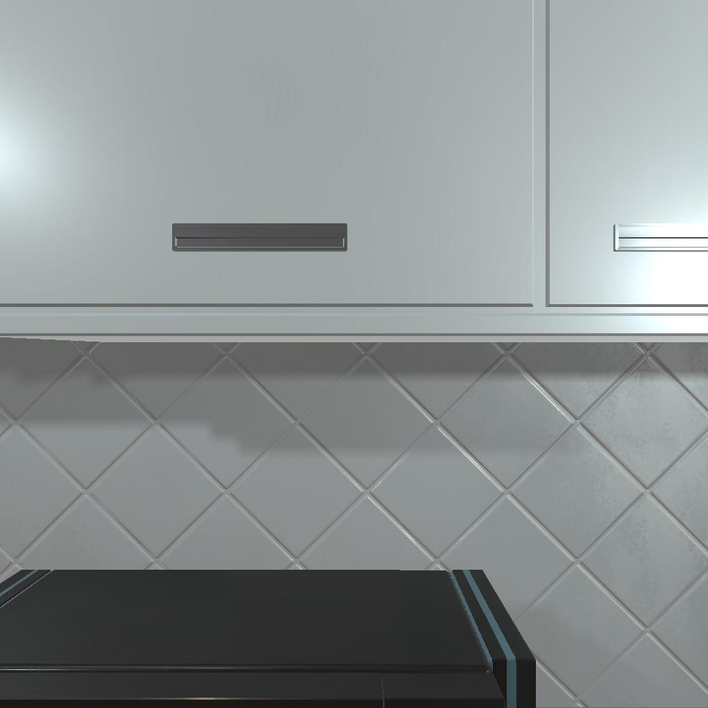

---------------------------------------------------------task: 21---------------------------------------------------------
--------------------------------------------------------------------------------------------------------------------------------------------------------------------
--------------------------------------------------------------------------------------------------------------------------------------------------------------------
Step:--------------------------------------------------------------------------6-------------------------------------------------------------------------------
----------------------------------------
VLM Prompt:
**Task**
Please perform as an embodied AI agent. Our final objective is to heat some cup and put it in countertop. Below is the plan for completing the task, the current observation, alongside historical data and admissible actions for the next step. Please determine the best action for the next step!
**Plan**
Below is a detailed step-by-step plan to complete the task.
1. Find a cup.
2. Pick up the cup.
3. Find a microwave.
4. Heat the cup with the microwave.
5. Find a countertop.
6. Place the heated cup on the countertop.
**Current Observation**
Displayed is an image capturing the current position of the agent.
**History Information**
Displayed are the previous observations with their corresponding actions.
State 1:
1. Step Index in the Plan: 1
2. Objects: Sink
3. Action: go to cabinet 1
State 2:
1. Step Index in the Plan: 1
2. Objects: Closed Cabinet
3. Action: open cabinet 1
State 3:
2. Step Index in the Plan: 2
3. Objects: Plate, Shelf, Open Cabinet
4. Action: go to cabinet 3
State 4:
1. Step Index in the Plan: 2
2. Objects: Open Cabinet, Plate
3. Action: go to cabinet 2
State 5:
1. Step Index in the Plan: 2
2. Objects: Cabinet, Plate
3. Action: go to cabinet 4
State 6:
2. Step Index in the Plan: 2
3. Objects: Closed Cabinet
4. Action: go to cabinet 5
**Admissible Actions**
(1): go to cabinet 1
(2): go to cabinet 3
(3): go to microwave 1
(4): go to cabinet 6
(5): go to countertop 1
(6): go to coffeemachine 1
(7): go to toaster 1
(8): go to countertop 2
(9): go to sink 1
(10): go to sinkbasin 1
(11): go to fridge 1
(12): open cabinet 5
(13): close cabinet 5
**Analysis Guideline**
1. Analyze the history and current observation, and then determine our current step in the plan and our current place.
2. List all visible objects related to the task in the current observation, without summarizing any as "various items."
3. Analyze the objects in the current observation based on the history and the requirements for the current step, and then determine if we can complete the step with the current observation.
4. Analyze and decide on the most appropriate action to take.
5. Summarize the analysis using the following format: "Analysis: [The summarization of the analysis], The Most Appropriate Action: (i which is the integer.): [Selected action]"
**Notes**
1. We must complete each step of the plan in order and cannot skip steps when the previous ones are not finished.
2. For "Go to" actions listed as "go to xxx [n]", interpret this as there are n distinct actions available: "go to xxx 1", "go to xxx 2", ..., "go to xxx n". Select one specific action from these options instead of using "go to xxx [n]".
3. If receptacles such as drawers, cabinets, and so forth are closed in the current observation, we may try to open them.
4. Pay attention to synonyms and ensure clarity in the terms used.
5. We must determine and provide the single action which must be in the **Admissible Actions**.
6. If there is no history available, we are at the first step and the current place is "Unknown".
**Answer**
Please select the most suitable action by following the **Analysis Guideline**, keeping the above **Notes** in mind.
----------------------------------------
----------------------------------------
VLM Response:
Analysis: Based on the current observation and history information, the agent is still at step 2 of the plan, which is to pick up a cup. The historical actions show attempts to find a cup by opening and going to various cabinets, but no action indicating the cup has been found yet. In the current observation, we see a closed cabinet. Based on the history, the agent has already attempted to go to cabinets 1, 2, 3, 4, and 5. The admissible actions include options to go to different cabinets and other objects, but since we are looking for a cup, the most relevant action is to try to open cabinet 5, which has not been opened yet according to the history provided.
The Most Appropriate Action: (12): open cabinet 5
----------------------------------------
----------------------------------------
>>> Refine VLM Response and Get Pure Action: open cabinet 5
----------------------------------------
-----------------------------------------------------------------
Running time: 7.41679048538208 seconds
Total Money: 0
-----------------------------------------------------------------
-----------------------------------------------------------------
Summarization Prompt:
**Context**
Analysis: Since there is no history information, we are at the first step in the plan, which is to find a statue. The current place is unknown. In the current observation, we see a floorlamp next to an armchair with a small table that has a small object on it, which could potentially be the statue we are looking for. Since the plan requires us to find a statue first and it appears there might be one on the table next to the armchair, we should investigate this object to determine if it is the statue we need.
The Most Appropriate Action: (1): go to armchair 1
**Summary**
1. Step Index in the Plan: 1
2. Objects: Floorlamp, Armchair, Small Table, Small Object (potential statue)
3. Action: go to armchair 1
**Context**
Analysis: Based on the current observation and history information, the agent is still at step 2 of the plan, which is to pick up a cup. The historical actions show attempts to find a cup by opening and going to various cabinets, but no action indicating the cup has been found yet. In the current observation, we see a closed cabinet. Based on the history, the agent has already attempted to go to cabinets 1, 2, 3, 4, and 5. The admissible actions include options to go to different cabinets and other objects, but since we are looking for a cup, the most relevant action is to try to open cabinet 5, which has not been opened yet according to the history provided.
The Most Appropriate Action: (12): open cabinet 5
Please summarize the context by following above examples when providing the summary, and ensure that only the summary is included, without any extra explanation.
**Summary**
-----------------------------------------------------------------
-----------------------------------------------------------------
Summarization Response:
1. Step Index in the Plan: 2
2. Objects: Closed Cabinet
3. Action: open cabinet 5
-----------------------------------------------------------------
-----------------------------------------------------------------
Text Observation:You open the cabinet 5. The cabinet 5 is open. In it, you see nothing.
-----------------------------------------------------------------
UNSUCCEED